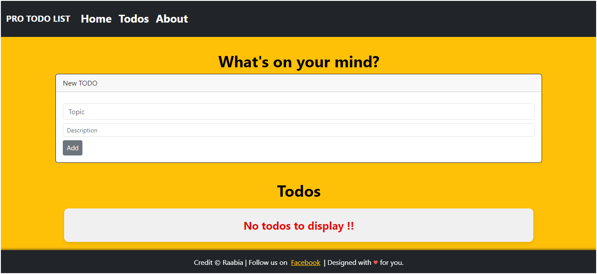
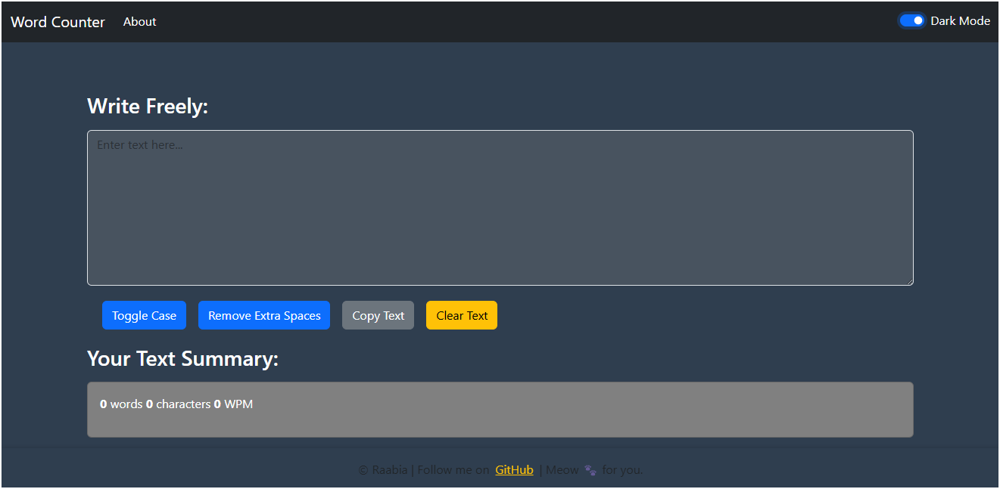
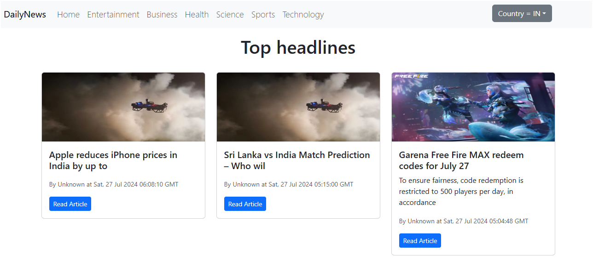
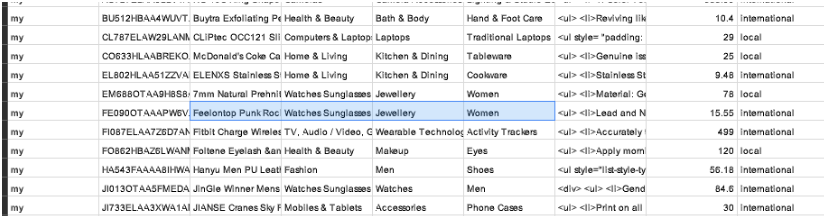
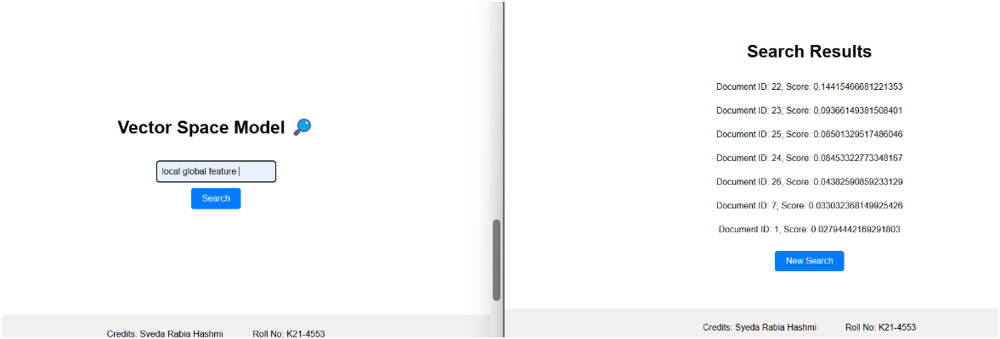
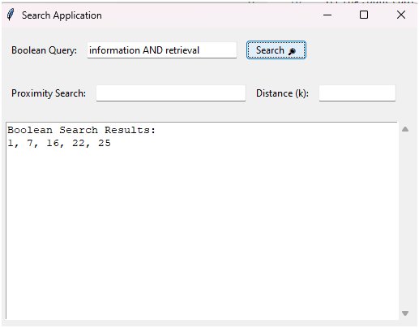

Intro
Hi there! I'm Syeda Rabia Hashmi, a passionate Computer Science student at FAST University, currently diving
deep into the world of AI and web development. With a strong command over React, I love crafting responsive
web applications that offer seamless user experiences. By the way, check out my awesome
work.
When I'm not coding, you can find me actively engaging on
Github , Reddit , and
LinkedIn, ready to connect, help and share
knowledge. 🤝 Dive into my awesome work to see what I've been up to!
Download My Resume
Top 3 React Projects
ToDos Application 🔗

I created my first project after learning React, a simple to-do list application allowing users to add and
delete to-dos while maintaining sequence. Resolving the sequencing issue involved using the useState hook to
update the list of todos, filtering and reindexing them properly. I utilized React arrow function components
and props, with the Header component receiving data from its parent via props.
LocalStorage was implemented with the useEffect hook to persist the todos state across browser sessions. The
website is responsive and colorful, thanks to Bootstrap. React's routing feature provided a single-page
application experience with simple navigation between Home and About pages.
WordCounter Website 🔗

Created a text counter website with excellent features such as text conversion, toggle case, removing extra
spaces, clearing text, copying text, and dark mode settings.
This Single Page Application is built using React JS. I have implemented advanced features such as dark mode
for whole website. More over, Alerts are designed to show whenever a button is selected or Theme is changed.
The use of JSX has shown me how useful React JS is than working on HTML, CSS, JS files.
Daily News Website - NewsAPI 🔗

The Daily News Application is designed using React JS with Bootstrap for styling, and it fetches news from
NEWSAPI. I tested the API using Postman and learned how to change parameters to fetch different results.
Using this information, I provided filters on my website so users can easily access the news they want. I
implemented this website using class-based components, which helped me learn that the lifecycle of a React
component can be divided into three main phases: Mounting, Updating, and Unmounting.
Through this project, I had the chance to revisit some forgotten concepts, such as the requirement that
constructors of derived classes (classes that extend another class) must call super() before accessing this.
This is a requirement of the JavaScript language. Using JSX, it was really easy to write inline logic into the
same file without having to create a separate one.
Top 3 AI Projects
Product Title Classification 🔗

This project focuses on preprocessing and classifying a dataset for information retrieval using Support Vector
Machines (SVM). The preprocessing phase involved multiple steps including stemming, column filtering, and data
imputation. We started by eliminating unnecessary columns from the dataset, retaining only 'category 1',
'category 2', 'category 3', 'title', and 'description'. The 'title' and 'description' columns were merged for
a comprehensive text analysis. Stemming was applied to reduce words to their root forms, and K-Nearest
Neighbors Imputation (KNNImpute) was used to fill in any missing data.
For classification, we utilized SVM, a robust method for categorizing data. The dataset was split into a 70-30
ratio for training and testing to evaluate the model's performance. In addition to the main dataset, queries
were also processed and classified, demonstrating the effectiveness of the SVM classifier. The model achieved
perfect classification accuracy, indicating a high similarity between the queried categories and the dataset
categories. The final output includes a confusion matrix and classification results, which highlight the
model's success in identifying the correct categories. To run the project, the code needs to be executed on
Google Colab with the appropriate path adjustments for the train_data.csv file.
Vector Space Model (VSM) 🔗

This project implements a basic Information Retrieval System using the Vector Space Model (VSM). It allows users to search for documents within a corpus based on a query. The system preprocesses the documents, calculates TF-IDF values, and ranks documents based on cosine similarity.
Boolean Information Retrieval Model 🔗

This project presents a robust Information Retrieval system, employing a Boolean Model to efficiently retrieve queries from a collection of 20 research papers. It utilizes Python, NLTK, and Tkinter to preprocess documents, create indexes, process queries, and provide a user-friendly interface.
About this Website

I have spent a fair amount of time creating websites using HTML, CSS, and JavaScript. Eventually, I decided to
move on to learning some JavaScript frameworks, so I chose to learn React JS. After working with React for a
long time, I realized I needed to revise my basic HTML skills.
To do this, I decided to build this portfolio as an opportunity to refresh my HTML knowledge. This portfolio
is based on an HTML5 template, and I have deployed it using GitHub Pages.
Contact